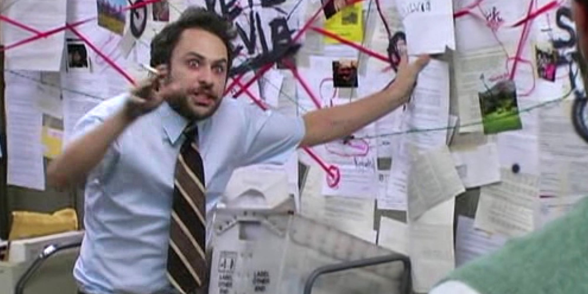
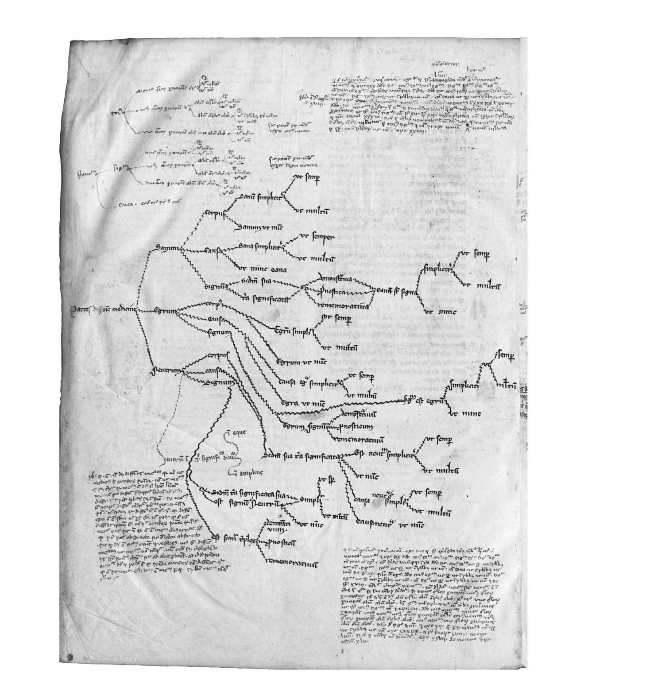
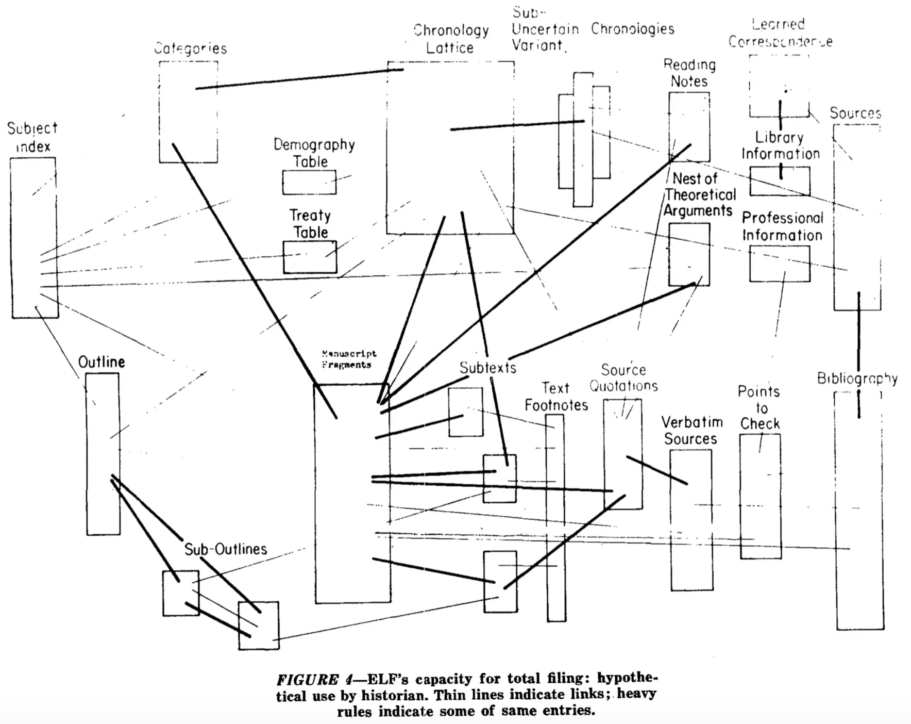
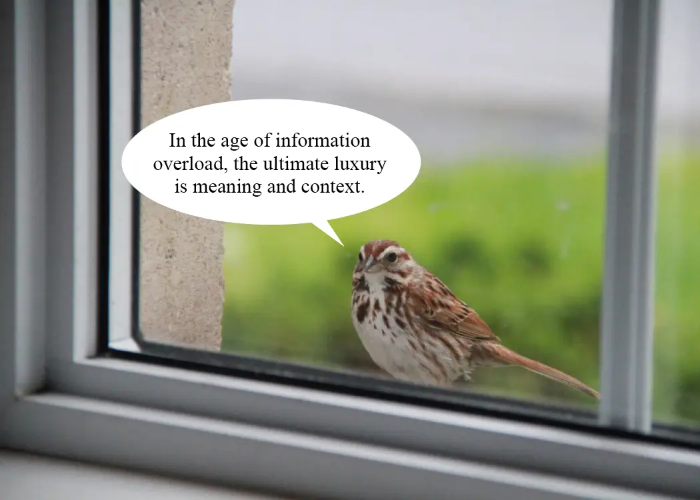

I wrote an essay → it's a lecture → No, it's a book → No, I just want to make something handmade → What is something that is handmade and how can it be in accordance with the essay? → Is a book actually an appropriate medium, since oversaturation is something that expands? → Maybe I'll just make a website.
Instead of making work on oversaturation I was doing research on what it is like to be oversaturated

-
Oversaturation
-
in pieces, distracted, inexact
- misreading scale and importance
- falling down the rabbit hole
-
it is amorphic
- everything is constantly changing and therefore always the same
- "simulated order" – glass pretending to be crystal
-
devoid of distance
-
schizophrenic (via Baudrillard)
- "an over-proximity of all things, a foul promiscuity of all things which beleaguer and penetrate him, meeting with no resistance, and no halo, no aura, not even the aura of his own body protects him. In spite of himself the schizophrenic is open to everything and lives in the most extreme confusion."
- in thermodynamic terms, entropic decay
-
sublimity is mediumsized and oversaturation is greatsized
- the sublime feeling appears only at the right distance – when something dangerous could happen but not to you
- what is the perfect "medium size"? is it A4?
-
schizophrenic (via Baudrillard)
-
sublime without pleasure
- a wall without neither ledge nor ladder
- While the Sublime is defined as oscillating between states of aversion and pleasure in facing absolute greatness, the reasonable response to Oversaturation is only a disgust at the vulgarity of pure amount.
-
an exaggeration of the miniature
- What becomes bigger the more you take from it?
- What becomes smaller the more you add to it?
-
in pieces, distracted, inexact

⡯⣝⣭⣫⣝⣭⣹⣭⣍⣫⣭⣍⣭⣍⣭⡩⣍⣭⣩⣍⣭⣩⣍⣭⣩⣍⣩⡍⣭⣩⣍⠯⣭⣙⣭⣫⣝⣭⣫⣽ ⡷⣹⠀⢀⣀⣀⣀⣀⣀⡀⠀⢀⣀⣀⣀⡗⣸⠀⠀⣀⣀⠀⠀⣀⣀⣀⣸⡐⡇⠀⢸⡘⡅⠀⢐⣛⣚⣲⣾⣶ ⡷⣹⠀⢸⢆⡳⠶⠼⡰⠇⠀⠸⠴⠦⠦⠵⠼⠀⠀⡇⢼⠀⠀⠧⠦⠶⠤⠵⠇⠀⢸⡐⡇⠀ saturation ⡷⣹⠀⢸⡌⡇⠀⢘⠥⣇⣀⣀⣀⢀⣀⣀⣀⢀⡀⢇⢺⣀⣀⣀⣀⢀⣀⣀⡀⠀⢸⡐⡇⠀⢸⡘⡇⠀⡗⣾ ⡷⣹⠀⢸⡸⡅⠀⠸⠼⠴⠦⠶⠤⠧⠶⡔⢢⠮⠴⠭⠦⠴⠤⡆⣰⠦⢴⠄⡇⠀⠸⠴⠇⠀⢰⢩⡇⠀⡟⣼ ⡷⣹⠀⢸⠲⡅⠀⢠⠤⠤⠤⠤⢤⡀⠀⡏⣹⠀⠀⡤⢤⠀⠀⡇⢼⠀⢸⢈⠧⠤⠤⠤⠤⠤⡜⢦⡇⠀⣟⣼ ⡷⣹⠀⠘⠓⠃⠀⠸⣌⡗⠙⠚⢦⡃⠀⡗⣸⠀⠀⡇⢺⠀⠀⠓⠚⠀⠘⠓⠚⠓⠛⠚⠙⠚⠚⠓⠃⠀⡗⣾ ⡷⣹⠤⡤⢤⠤⠤⢼⡠⡇⠀⠘⡆⡇⠀⡗⣸ ⡧⠹⠤⠤⠤⠤⠤⠤⠤⡄⠀⢠⠤⠤⠤⢤⠤⡄⠀⣟⣼ ⡷⣱⠛⠘⠃⠛⠙⠒⠓⠃⠀⠘⣌⠇⠀⠓⠚⠀⠀⠓⠓⠛⠒⡏⢴⠛⠚⠓⠋⠀⢸⠌⡟⠛⠒⠛⠃⠀⡗⣾ ⡷⣹⠀⢠⢆⡤⠤⠤⣄⡄⠀⠘⡤⢣⠄⡤⢠⠄⡤⢠⢤⠀⠀⡇⢺⠀⢠⠦⢄⠤⡘⢎⡇⠀⢰⠤⡤⢤⠻⣼ ⣧⢻⠀⢸⡜⡕⠒⠂⠙⠃⠀⠰⣡⠎⠰⠁⠎⠰⠡⡎⢼⠀⠀⡇⢺⠀⢸⠠⣞⠠⠓⠘⠃⠀⢸⠰⡇⠚⣦⢻ ⣧⢻⠀⢸⡸⣅⢠⡀⣄⡀⠀⢰⠡⡇⠀⣠⢠⠀⠀⡗⡸⢄⡀⠧⢹⠀⢸⡐⠧⣄⢠⡀⣄⢠⠸⡱⡇⠀⣏⢿ ⣧⢻⠀⠘⠓⠈⠃⢺⠰⡇⠀⠘⠑⠃⠀⣇⢺⠀⠀⠓⠑⠂⠸⡅⢻⠀⠘⠃⠓⠈⠂⠑⠊⠒⢭⢓⡇⠀⡯⢾ ⣧⢻⢤⠤⣤⡄⠀⢨⢓⠧⠤⡤⢤⠤⠤⣇⠺⠤⠤⠤⢤⠀⠀⡇⡹⠤⠤⠤⡤⢤⠤⡤⡄⠀⢸⢌⡇⠀⣏⢿ ⣧⢻⠚⠓⠒⠃⠀⠘⠓⠚⠓⢺⢡⡞⠓⠚⠓⠛⠚⠓⠛⠀⠀⡇⣱⠚⠓⠓⠚⠒⢻⠔⡇⠀⠘⠚⠃⠀⣏⢾ ⣧⢻⠀⢠⡖⣒⣒⢒⣒⢒⡒⡚⣤⠃⠀⡖⡒⢒⡒⢒⡒⢒⠒⢣⢼⠀⢠⢒⡆⠀⢸⠌⡇⠀⢰⢒⡒⡖⣏⢾ ⣧⢻⠀⠈⠉⠁⠉⢩⠆⡏⠉⠉⠈⠁⠀⡧⢹⠁⠉⠁⠉⠉⠉⠁⠈⠀⢸⠠⠇⠀⢸⡘⡇⠀⠸⣌⡏⠉⡗⣾ ⣧⣛⢖⣢⢒⡆⠀⢸⡘⡇⠀⠰⡒⡆⠀⡧⢹⠀⠀⡖⣐⢂⢒⡐⢂⡒⢊⡕⡃⠀⢸⡐⡇⠀⢸⠰⡇⠀⡟⣼ transparency ⠀ ⢰⢡⡇⠀⢰⡑⡇⠀⠉⠉⠀⠀⠉⠀⠉⠀⠉⠁⠈⢹⡐⣃⠀⠈⠉⠁⠀⠈⠉⠁⠀⣟⣼ ⡟⡽⣓⢲⣒⢲⡐⣎⠲⣅⠲⣌⠲⣅⠒⣆⢒⡒⣒⢒⡒⣒⢒⡒⣒⡐⢪⠥⣙⢒⡒⡲⢒⣚⢲⡒⣖⠲⣍⢾
Lines of Thought, p. 41

A File Structure for The Complex, The Changing and the Indeterminate by T. H. Nelson, 1965

What can be deemed as "handmade" and what does it mean to feel like a handyman?
"I evoke the term 'handmade web' to refer to web pages coded by hand rather than by software; web pages made and maintained by individuals rather than by businesses or corporations; web pages which are provisional, temporary, or one-of-a-kind; web pages which challenge conventions of reading, writing, design, ownership, privacy, security, or identity."
J.R. Carpenter, A Handmade Web
The handmade web is a way for things in progress to be given shape
Writing code and making your own corner (or shell) on the WWW is like making a bookwork or knitting a scarf or tending to a garden (although it does not have to be described in only homely terms).
A platform (?) for interlacing texts

the first iteration
gretathorkels.net/web/emporium.html
-
Questions
-
What does a website look like in an exhibition?
- A website like this is not an artwork and I am not an artist
- Is it just a link?
-
A computer-setup in the space
- Can I print a website?
- I have an iPad and two old broken iPhones, perhaps I could show it on them?
-
What does the site need to do?
- What works?
- What does not work?
-
What does a website look like in an exhibition?
thank you!